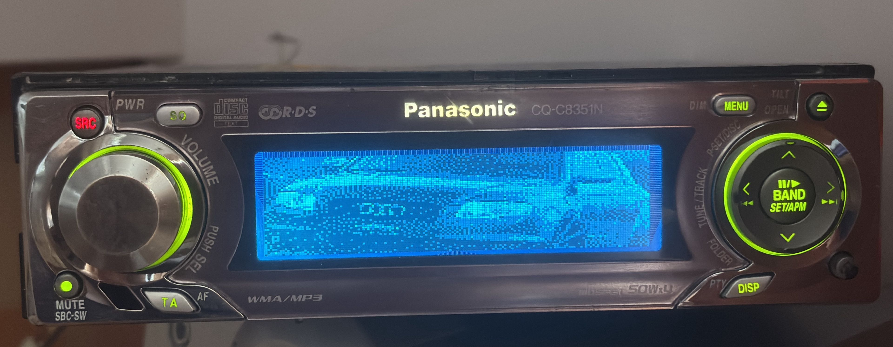
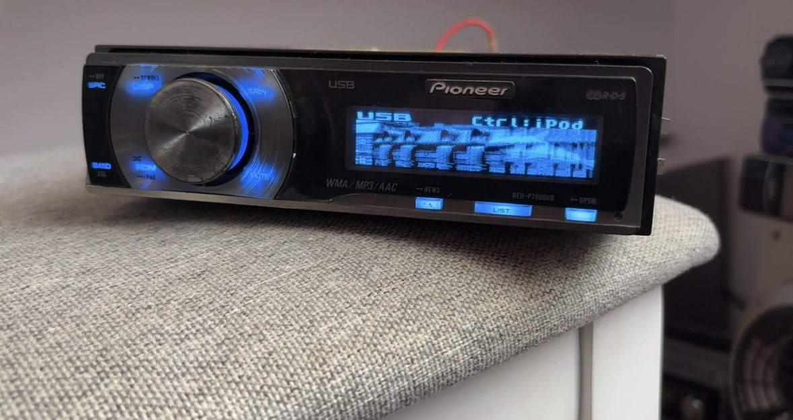
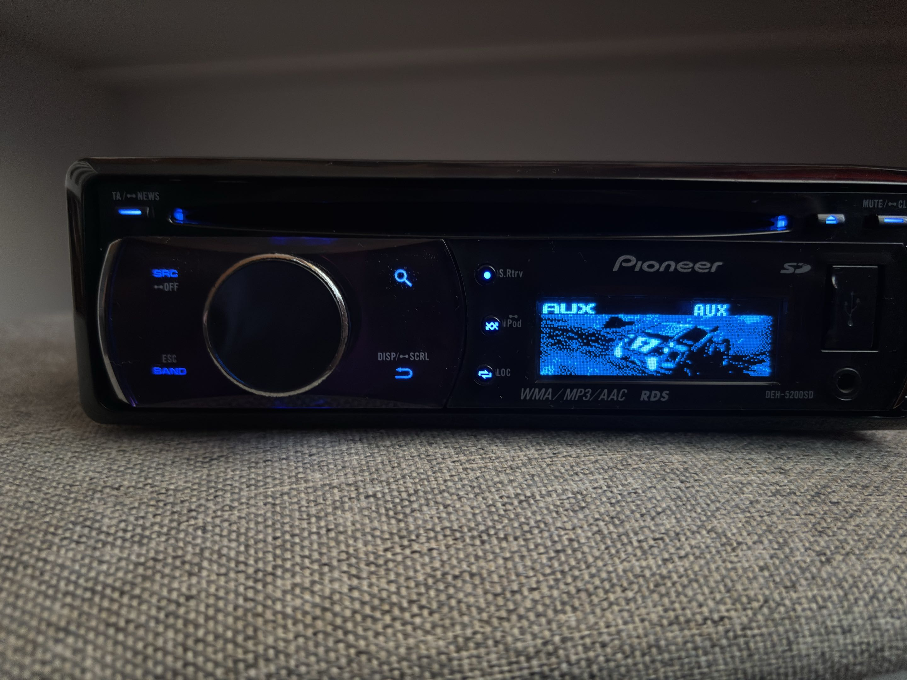
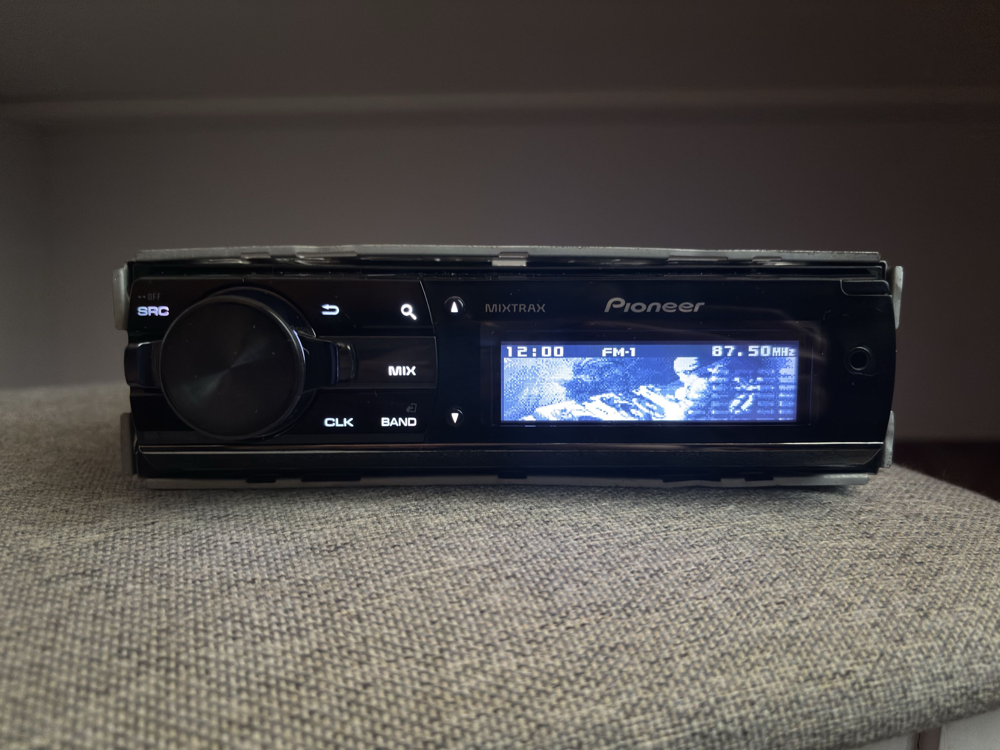

Как появилось моё увлечение
Интерес к старым автомобильным магнитолам у меня появился относительно недавно. Однажды, когда я листал TikTok, мне начали попадаться интересные видео с автомобильными магнитолами 2000-х годов.
Меня заинтересовали их необычный дизайн, дисплеи и различные визуальные эффекты. Особенно мне понравились магнитолы таких производителей, как Pioneer, Sony, Panasonic и Kenwood.
Почему именно старые магнитолы?
На мой взгляд, старые автомобильные магнитолы выглядят намного эстетичнее современных.
По внешнему виду, кнопкам, материалам и конструкции создаётся ощущение более качественной и продуманной сборки. Мне также нравится, что многие модели имеют свой уникальный дизайн и сильно отличаются друг от друга.
Любимый производитель
Больше всего мне нравятся магнитолы фирмы Pioneer.
Особенно интересны модели с необычными дисплеями и различными анимациями. Именно такие детали делают магнитолы запоминающимися и отличают их друг от друга.
Производители, которые мне интересны:
- Pioneer
- Sony
- Panasonic
- Kenwood
Магнитолы, которые у меня были
За время увлечения у меня было несколько интересных моделей автомобильных магнитол.
- Panasonic CQ-C8351N
- Pioneer DEH-P7000UB
- Pioneer DEH-5200SD
- Pioneer DEH-X9500SD
Мои модели

Panasonic CQ-C8351N
Одна из моделей, которая была у меня во время увлечения старыми магнитолами.

Pioneer DEH-P7000UB
Интересная модель Pioneer, которая также была у меня.

Pioneer DEH-5200SD
Ещё одна модель Pioneer из моей коллекции.

Pioneer DEH-X9500SD
Одна из наиболее интересных моделей среди тех, которые у меня были.
Мои магнитолы
| Производитель | Модель | Интересная особенность |
|---|---|---|
| Panasonic | CQ-C8351N | Необычный дизайн |
| Pioneer | DEH-P7000UB | Дизайн и дисплей |
| Pioneer | DEH-5200SD | Внешний вид |
| Pioneer | DEH-X9500SD | Дисплей и анимации |
Что мне нравится в старых магнитолах
- необычный дизайн;
- качественная сборка;
- интересные дисплеи;
- различные анимации;
- большое количество физических кнопок;
- индивидуальность каждой модели.
Связь с другими увлечениями
Мой интерес к магнитолам напрямую связан с увлечением автомобилями.
Вернуться к разделу об автомобилях можно здесь.
Также можно вернуться в начало страницы.